第四章 基本平面图形·拔尖卷
【北师大版2024】
参考答案与试题解析
一、选择题（本大题共10小题，每小题3分，满分30分）
1．（24-25七年级上·黑龙江绥化·期中）明明用圆规画一个周长是31.4cm的圆，圆规两脚间的距离是（ ）cm．
A．15.7 B．5 C．10 D．1
【答案】B
【分析】本题考查圆的周长公式，圆规两脚间的距离是半径，根据周长公式即可求解．
【详解】解：31.4÷2π=31.4÷2÷3.14=5 cm，
故选：B．
2．如图所示，下列结论正确的是（ ）

A．共有射线 10条，直线 10条 B．共有线段 10条，射线5条
C．共有线段 10条，直线1条 D．共有线段 10条，直线2条
【答案】C
【分析】本题主要考查了直线，射线和线段的定义及查找，解题的关键是熟练掌握相关定义．
利用直线，射线和线段的定义进行判断即可．
【详解】解：根据图象可得，共有射线10条，共有线段10条，直线1条，
故选：C．
3．从五边形的一个顶点出发，可以画m条对角线，它们将五边形分成n个三角形，则m+n的值为（ ）
A．5 B．6 C．7 D．8
【答案】A
【分析】本题考查多边形的对角线，n边形从一个顶点出发可引出(n−3)条对角线，它们把n边形分成(n−2)个三角形，由此即可计算．
【详解】解：∵从五边形的一个顶点出发，可以画出5−3=2条对角线，它们将五边形分成5−2=3个三角形，
∴m=2，n=3，
∴m+n的值为2+3=5．
故选：A．
4．如图，延长线段AB至C使BC=2AB，延长线段BA至D使AD=3AB，点E是线段DB的中点，点F是线段AC的中点，若AB=6cm，则EF的长度为（ ）
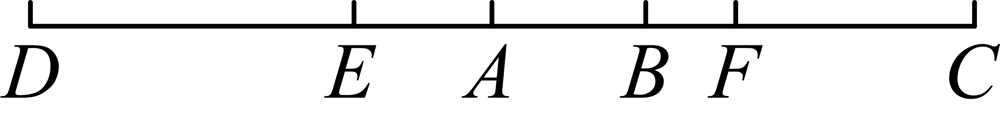
A．15cm B．16cm C．18cm D．20cm
【答案】A
【分析】本题主要考查了线段中点的定义，线段的和差计算，先根据题意得出BD=AB+AD=24cm，AD=3AB=18cm，再根据线段中点的定义得到BE=12BD=12cm，AF=12AC=9cm，进而求解即可．
【详解】解：∵BC=2AB，AD=3AB，AB=6cm，
∴BC=2AB=12cm，AD=3AB=18cm，
∴AC=AB+BC=18cm，BD=AB+AD=24cm，
∵点E是线段DB的中点，点F是线段AC的中点，
∴BE=12BD=12cm，AF=12AC=9cm
∴EF=BE+AF−AB=12+9−6=15cm．
故选：A．
5．（24-25七年级上·甘肃兰州·期末）如图，射线OC在∠AOB的内部，图中共有3个角：∠AOB，∠AOC和∠BOC，若其中一个角的度数是另一个角度数的两倍，则称射线OC是∠AOB的“平衡线”.若∠AOB=72°，且射线OC是∠AOB的“平衡线”，则∠AOC的度数为（ ）
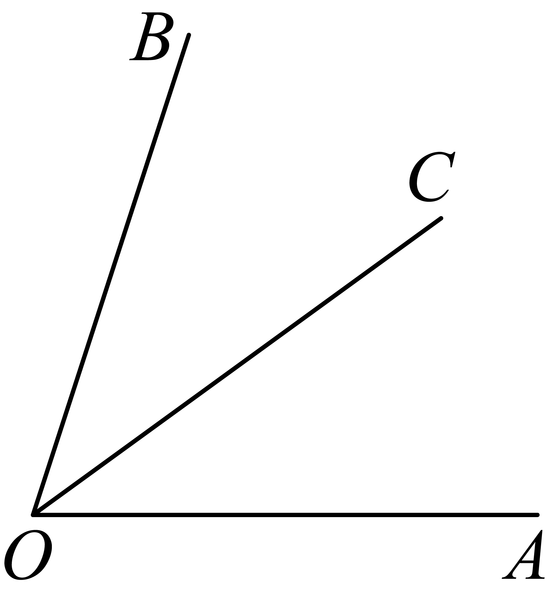
A．24° B．24°或36° C．36°或48° D．24°或36°或48°
【答案】D
【分析】本题主要考查了角的计算、一元一次方程的应用等知识点，理解“平衡线”的定义以及分类讨论思想是解题的关键．
根据“平衡线”的定义，分∠AOB=2∠AOC、∠AOC=2∠BOC、∠BOC=2∠AOC三种情况，分别列出关于∠AOC的方程求解即可．
【详解】解：根据“平衡线”的定义，可分三种情况讨论：
①当∠AOB=2∠AOC时，即2∠AOC=72°，解得：∠AOC=36°；
②当∠AOC=2∠BOC时，
∵∠AOC+∠BOC=∠AOB=72°，
∴32∠AOC=72°，解得：∠AOC=48°；
③当∠BOC=2∠AOC时，
∵∠BOC+∠AOC=∠AOB=72°，
∴3∠AOC=72°，解得：∠AOC=24°；
综上，∠AOC的度数为24°或36°或48°．
故选：D．
6．（24-25七年级上·山东济南·期末）如图，AB为一根长为25 cm的绳子，拉直铺平后，在绳子上任意取两点M、N，分别将AM、BN沿点M、N折叠，点A、B分别落在绳子上的点A′、B′处．当A′B′=5 cm时，MN的长为（ ）
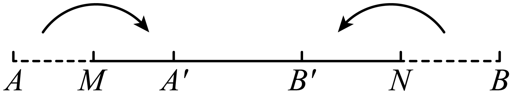
A．10 cm B．25 cm
C．10 cm或15 cm D．15 cm或25 cm
【答案】C
【分析】本题考查了折叠的性质，两点之间的距离．
分两种情况分别计算即可：当点落在点的左侧时，当点落在点的右侧时．
【详解】解：当点A′落在点B′的左侧时，如图，
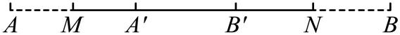
∵AM+A′M+A′B′+B′N+BN=25cm，A′B′=5cm，∴AA′+BB′=20cm，
由折叠的性质得，AM=A′M，BN=B′N，
∴A′M+B′N=10cm，
∴MN=MA′+A′B′+B′N=15cm；
当点A′落在点B′的右侧时，如图，
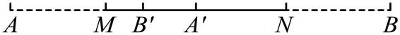
∵AA′+BB′=AB+A′B′=25+5=30cm，∴AM+BN=12AA′+12BB′=12AA′+BB′=12×30=15cm，
∴MN=AB−AM+BN=25−15=10cm，
综上所述，当A′B′=5 cm时，MN的长为15cm或10cm．
7．（24-25七年级上·陕西咸阳·期末）如图，有两根木条，一根AB长为100cm，另一根CD长为150cm，在它们的中点处各有一枚钉子M，N（钉子大小忽略不计，M，N抽象成两个点），若将它们的一端重合，放置在同一条直线上，此时两根木条上钉子之间的距离MN是（ ）
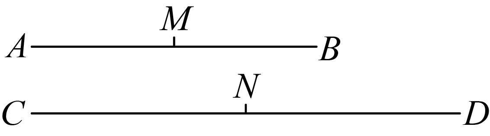
A．50cm B．25cm C．125cm D．25cm或125cm
【答案】D
【分析】题目主要考查线段两点间的距离，中点的性质，分类讨论，掌握数形结合的思想是解题关键．
根据题意，分两种情况讨论：当A，C（或B，D）重合，且剩余两端点在重合点同侧时；当B，C或A，D重合，且剩余两端点在重合点两侧时；作出相应图形，结合图形求解即可．
【详解】解：①当A，C（或B，D）重合，且剩余两端点在重合点同侧时，
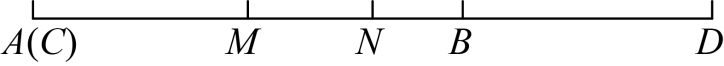
由图可知，MN=CN−AM=12CD−12AB=12×150−12×100=25cm；
②当B，C或A，D重合，且剩余两端点在重合点两侧时，
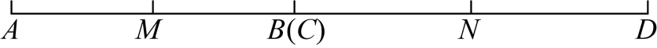
MN=CN+BM=12CD+12AB=12×150+12×100=125cm；∴两根木条的小圆孔之间的距离MN是25cm或125cm．
故选：D
8．（24-25七年级上·安徽六安·期末）如图，已知∠AOB=120°，OE平分∠AOB，射线OC在∠AOE内部，∠BOC=90°，作射线OF，使射线OC是∠EOF三等分线，则∠AOF的度数为（ ）
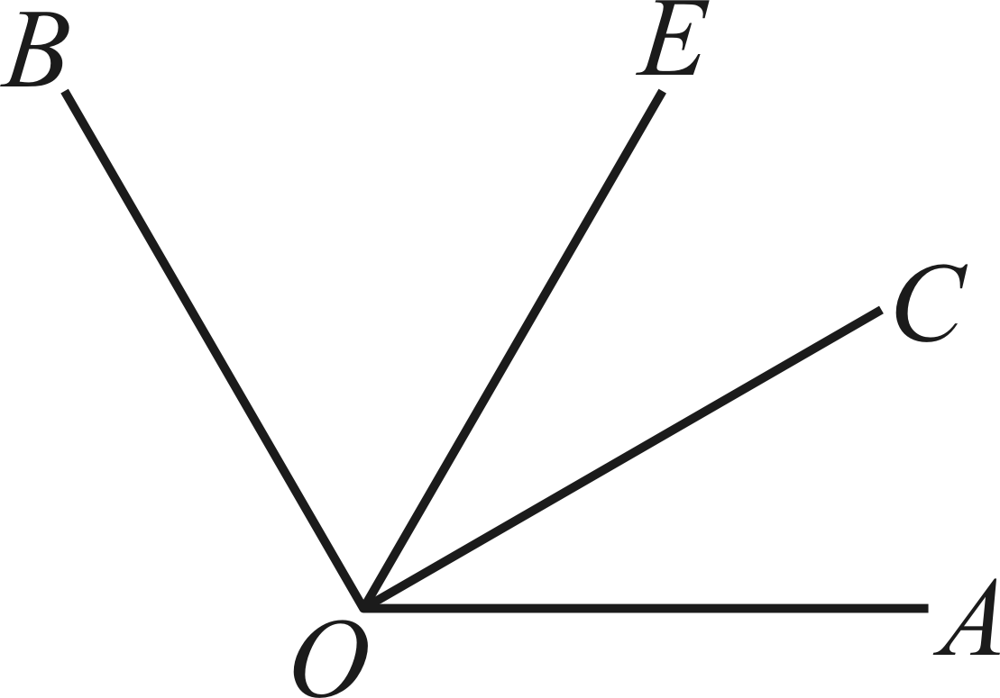
A．15° B．30° C．15°或30° D．30°或45°
【答案】C
【分析】本题主要考查角的和差，角平分线与三等分线，掌握分类讨论思想是解题的关键．
由角平分线得到∠AOE=∠BOE=12∠AOB=60°，结合∠BOC=90°可得∠EOC=30°，再根据射线OC是∠EOF三等分线可分∠EOC=13∠EOF和∠EOC=23∠EOF两种情况求解可得．
【详解】解： ∵OE平分∠AOB，∠AOB=120°，
∴ ∠AOE=∠BOE=12∠AOB=60°，
∵∠BOC=90°，
∴∠EOC=∠BOC−∠EOB=30°，
∵OC是∠EOF三等分线，
∴①若∠EOC=13∠EOF，
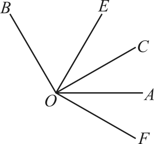
则∠EOF=3∠EOC=90°，
∴∠AOF=∠EOF−∠EOA=30°；
②若∠EOC=23∠EOF，
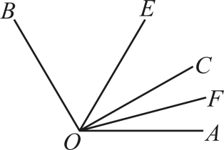
则∠EOF=32∠EOC=45°，
∴∠AOF=∠AOE−∠EOF=15°；
综上，∠AOF的度数为30°或15°，
故选：C．
9．（24-25七年级上·江苏扬州·期末）如图，已知点A、B在电线OP上，OA=25OP，BP=710OP．若将电线在点A处折叠，使点O、B分别落在点O′、B′处，则用老虎钳在点B′处剪断后，电线OP剪成的三段中，最短的电线与最长的电线长度比是（ ）
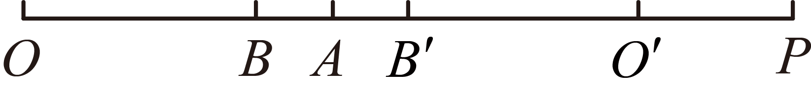
A．1:2 B．1:3 C．2:3 D．2:5
【答案】D
【分析】本题考查了翻折变换（折叠问题），比的应用，熟练掌握折叠的性质是解题的关键．
设OP=x，根据已知条件得到OA=AO′=25OP=25x，BP=710OP=710x，求得AB=A′B′=OA+BP−OP=25x+710x−x=110x，得到．BB′=15x．，B′P=OP−OB′=x−25x−110x=12x，于是得到结论．
【详解】解：设OP=x，
∴OA=AO′=25OP=25x，BP=710OP=710x，
∴AB=A′B′=OA+BP−OP=25x+710x−x=110x，
∴OB=O′B′=25x−110x=310x，
∴BB′=15x，B′P=OP−OB′=x−25x−110x=12x，
∴最短的电线与最长的电线长度比是BB′:B′P=15x12x=2:5，
故选：D．
10．如图，C为直线AB上一点，∠DCE为直角，CF平分∠ACD，CH平分∠BCD，CG平分∠BCE，各学习小组经过讨论后得到以下结论：①∠ACF与∠DCH互余；②∠HCG=60°；③∠ECF与∠BCH互补；④∠ACF−∠BCG=45°．下列结论中错误的有（ ）个．
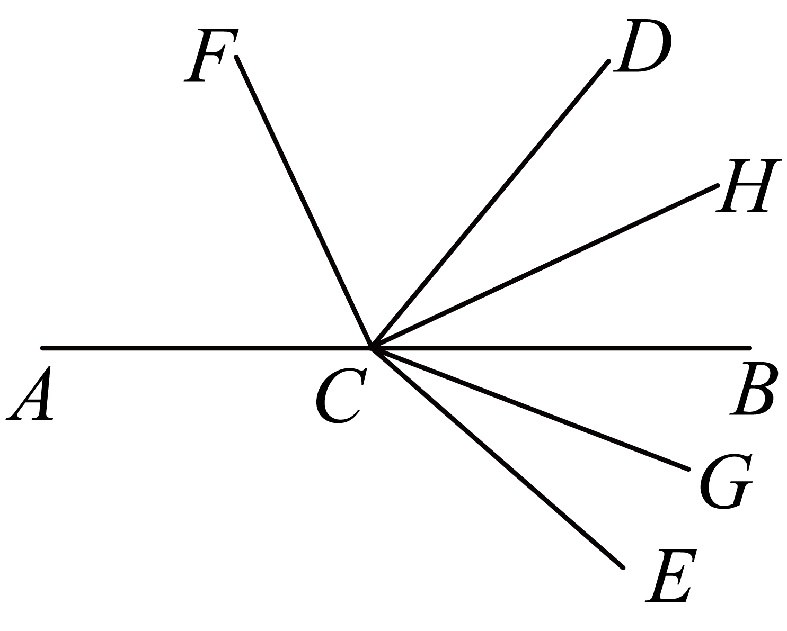
A．1 B．2 C．3 D．4
【答案】A
【分析】本题考查余角和补角，角平分线的定义等知识，解题的关键是灵活运用所学知识解决问题，属于中考常考题型．
根据角平分的定义，互为余角、互为补角的定义逐个进行判断，最后得出答案做出选择．
【详解】解：∵CF平分∠ACD,CH平分∠BCD，CG平分∠BCE，
∴∠ACF=∠FCD=12∠ACD,∠DCH=∠HCB=12∠DCB,∠BCG=∠ECG=12∠BCE，
∵∠ACB=180°,∠DCE=90°，
∴∠FCH=90°，∠HCG=45°，∠FCG=135°，②错误，
∴∠ACF+∠DCH=90°，故①正确，
∵∠ECF=∠DCE+∠FCD=90°+∠FCD,∠FCD+∠DCH=90°，
∴∠ECF+∠DCH=180°，
∵∠DCH=∠HCB，
∴∠ECF与∠BCH互补，故③正确，
∵∠ACD−∠BCE=180°−∠DCB−∠BCE=90°，
∴∠ACF−∠BCG=45°．故④正确．
综上所述：错误的结论是②，共1个．
故选A ．
二、填空题（本大题共6小题，每小题3分，满分18分）
11．将一个圆分割成三个扇形，它们圆心角度数的比1：3：5，则最大扇形的圆心角的度数为 ．
【答案】200°
【分析】根据它们的圆心角的度数和为周角，则利用它们所占的百分比计算它们的度数．
【详解】最大扇形的圆心角的度数＝360°×51+3+5＝200°．
故答案为200°
【点睛】本题考查了认识平面图形－圆心角，解答此题的关键是由题意得出三个圆心角的和为360°．
12．如图，已知线段AB=60，点C、D分别是线段AB上的两点，且满足AC:CD:DB=3:4:5，点K是线段CD的中点，则线段AK的长为 ．
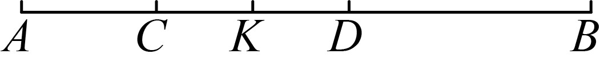
【答案】25
【分析】本题考查了两点间的距离．
根据线段的比例，可用x表示AC，CD，DB，根据线段的和差，可得关于x的方程，解方程可得x的值，再根据线段中点的性质，可得KC的长，根据线段的和差，可得答案．
【详解】∵AC:CD:DB=3:4:5，
∴设AC=3x，则CD=4x，DB=5x，
∵AB=AC+CD+DB=60，
∴AB=3x+4x+5x=60，
解得x=5，
∴AC=15，CD=20，
∵点K是线段CD的中点．
∴KC=12CD=10，
∴AK=KC+AC=25．
故答案为：25．
13．（24-25七年级上·河南南阳·期末）如图A、B、C、D四个车站的位置顺次在一条直线上，A，C两站之间的距离AC=3a−12b，B，C两站之间的距离BC=2a−b，B，D两站之间的距离BD=5a+12b−1．若A，B两站之间的距离AB=90km，则C，D两站之间的距离CD为 km．
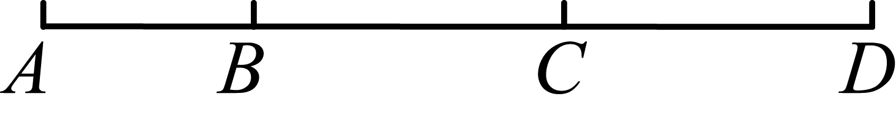
【答案】269
【分析】本题考查了整式加减的应用，首先根据题意表示出AB=a+12b，CD=BD−BC=3a+32b−1，然后根据AB=90km求解即可．
【详解】A，B两站之间的距离AB=AC−BC=3a−12b−2a−b=a+12b；
CD=BD−BC=5a+12b−1−2a−b=3a+32b−1，
∵a+12b=90km，
∴3a+32b=270km，
∴CD=270−1=269km．
答：C，D两站之间的距离CD是269km．
故答案为：269．
14．已知∠AOB=60°，画射线OC，使∠AOC∶∠BOC=7∶5，OM平分∠AOB，ON平分∠BOC，则∠MON= ．
【答案】17.5°或92.5°
【分析】本题主要考查了几何图形中角度的计算，角平分线的定义，分射线OC在∠AOB外，射线OC在∠AOB内，两种情况分别求解即可.
【详解】解：当射线OC在∠AOB内时，如图1，

∵AOC∶∠BOC=7∶5，∠AOB=60°，
∴∠AOC=77+5×60°=35°，∠BOC=57+5×60°=25°，
∵OM平分∠AOB，ON平分∠BOC，
∴∠AOM=12∠AOB=30°，∠BON=12∠BOC=12.5°，
∴∠MON=∠AOB−∠AOM−∠BON=60°−30°−12.5°=17.5°.
当射线OC在∠AOB外时，如图2，

∵AOC∶∠BOC=7∶5，∠AOB=60°，
∴∠AOC=77+5×(360°−60°)=175°，∠BOC=57+5×(360°−60°)°=125°，
∵OM平分∠AOB，ON平分∠BOC，
∴∠BOM=12∠AOB=30°，∠BON=12∠BOC=62.5°，
∴∠MON=∠BOM+∠BON=30°+62.5°=92.5°.
综上所述：∠MON=17.5°或92.5°
故答案为：17.5°或92.5°．
15．如图1，一款暗插销由外壳AB，开关CD，锁芯DE三部分组成，其工作原理如图2，开关CD绕固定点O转动，由连接点D带动锁芯DE移动．图3为插销开启状态，此时连接点D在线段AB上，如D1位置．开关CD绕点O顺时针旋转180°后得到C2D2，锁芯弹回至D2E2位置（点B与点E2重合），此时插销闭合如图4．已知CD=72mm，AD2−AC1=50mm，则BE1= mm．
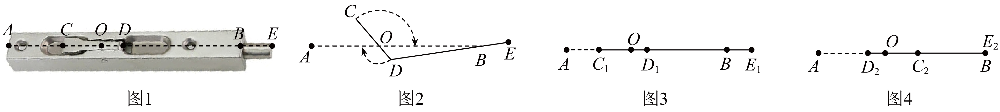
【答案】22
【分析】本题主要考查了线段的和差计算，结合图形得出当点D在O的右侧时，即D1位置时，B与点E的距离为BE1，当点D在O的左侧时，即D2位置时，B与点E重合，即E2位置，得出BE1=OD1+OD2=2OD2，再由图形中线段间的关系得出CD=OC1+OD2=OD2+50+OD2=72mm，即可求解．
【详解】解：由图3得，当点D在O的右侧时，即D1位置时，B与点E的距离为BE1，
由图4得，当点D在O的左侧时，即D2位置时，B与点E重合，即E2位置，
∴BE1=OD1+OD2=2OD2，
∵AD2−AC1=50mm，
∴AO−OD2−AO−OC1=50mm，
∴OC1−OD2=50mm，
∴OC1=OD2+50，
∵CD=OC+OD=OC1+OD1，
∴CD=OC1+OD2=OD2+50+OD2=72mm，
∴2OD2=22mm，
∴BE1=22mm，
故答案为：22．
16．（24-25七年级上·安徽合肥·期末）定义：如果一个角内部的一条射线将这个角分成两个角，其中一个角是另一个角的n倍，那么我们将这条射线称为这个角的n+1分位线．例如：如图1，∠MOP=4∠NOP，则OP为∠MON的5分位线；∠NOQ=4∠MOQ，则OQ也是∠MON的5分位线．

（1）如图2，点A、O、B在同一条直线上，OC为一条射线，OP，OQ分别为∠AOC与∠BOC的3分位线，（∠COP>∠POA，∠COQ>∠QOB），∠AOC=150°，则∠POQ= ；
（2）如果点A、O、B在同一条直线上，OC为一条射线，已知射线OM、ON分别为∠AOC与∠BOC的5分位线，且∠MON=96°，则∠AOC= ．
【答案】 120° 80°或100°
【分析】本题考查了新定义——角的n+1分位线．熟练掌握新定义，角的和差倍分关系，分类讨论，是解题的关键．
（1）求出∠BOC=30°，根据OP，OQ分别为∠AOC与∠BOC的3分位线，（∠COP>∠POA，∠COQ>∠QOB），得∠COP=23∠AOC=100°，∠COQ=23∠BOC=20°，得∠POQ=∠COP+∠COQ=120°；
（2）根据OM、ON分别为∠AOC与∠BOC的5分位线，得∠COM=15∠AOC,或∠COM=45∠AOC；∠CON=15∠BOC，或∠CON=45∠BOC,当∠COM=15∠AOC, ∠CON=15∠BOC时，∠COM+∠CON=36°,不合；当∠COM=15∠AOC，∠CON=45∠BOC时，∠COM+∠CON=36°+35∠BOC=96°， 得∠AOC=80°；当∠COM=45∠AOC，∠CON=15∠BOC时，∠COM+∠CON=36°+35∠AOC=96°，得∠AOC=100°；当∠COM=45∠AOC，∠CON=45∠BOC时，∠COM+∠CON=144°>96°，不合．
【详解】解：（1）∵∠AOC=150°，
∴∠BOC=180°−∠AOC=30°，
∵OP，OQ分别为∠AOC与∠BOC的3分位线，（∠COP>∠POA，∠COQ>∠QOB），
∴∠COP=2∠AOP，∠COQ=2∠QOB，
∵∠COP+∠AOP=150°，∠COQ+∠QOB=30°，
∴∠COP=23∠AOC=100°，∠COQ=23∠BOC=20°，
∴∠POQ=∠COP+∠COQ=120°；
故答案为：120°；
（2）∵射线OM、ON分别为∠AOC与∠BOC的5分位线，
∴∠AOM=4∠COM，∴∠COM=15∠AOC,
或∠COM=4∠AOM，∴∠COM=45∠AOC；
∠BON=4∠CON，∴∠CON=15∠BOC，
或∠CON=4∠BON，∴∠CON=45∠BOC，
当∠COM=15∠AOC, ∠CON=15∠BOC时，
∠COM+∠CON=15∠AOC+∠BOC=36°，
∵∠COM+∠CON=∠MON=96°，
∴不合；
当∠COM=15∠AOC，∠CON=45∠BOC时，
∠COM+∠CON=15∠AOC+45∠BOC=36°+35∠BOC=96°，
∴∠BOC=100°，
∴∠AOC=80°；
当∠COM=45∠AOC，∠CON=15∠BOC时，
∠COM+∠CON=45∠AOC+15∠BOC=36°+35∠AOC=96°，
∴∠AOC=100°；
当∠COM=45∠AOC，∠CON=45∠BOC时，
∠COM+∠CON=45∠AOC+∠BOC=144°>96°，
不合．
∴∠AOC=80°或∠AOC=100°．
故答案为：80°或100°．
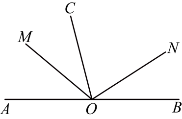
三、解答题（本大题共8小题，满分72分）
17．（6分）如图，已知线段AB，点D是线段AB上的一点，延长AB到C，使BC=BD．
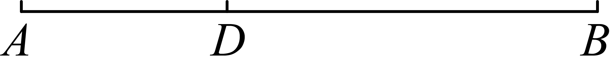
(1)请补全图形；
(2)若AC=8,BD=3．求线段BC、AD的长．
(3)试说明：AD+AC=2AB．
【答案】(1)见解析
(2)BC=3,AD=2
(3)见解析
【分析】本题考查作一条线段等于已知线段，线段的和差，解题的关键在于结合图形进行分析．
（1）根据作一条线段等于已知线段的作图步骤，作线段BC即可；
（2）根据线段的和差结合图形分析即可；
（3）根据线段的和差结合图形分析说明即可；
【详解】（1）解：所作线段BC如图所示：
（2）解：∵ BD=3，
∴ BC=BD=3，
∵ AC=8，
∴AD=AC−BD−BC=8−3−3=2；
（3）解：AD+AC=AD+AD+BD+BC
=AD+BD+AD+BC
=AD+BD+AD+BD
=AB+AB
=2AB．
18．（6分）如图，已知∠AOB，OE平分∠AOC，OF平分∠BOC．
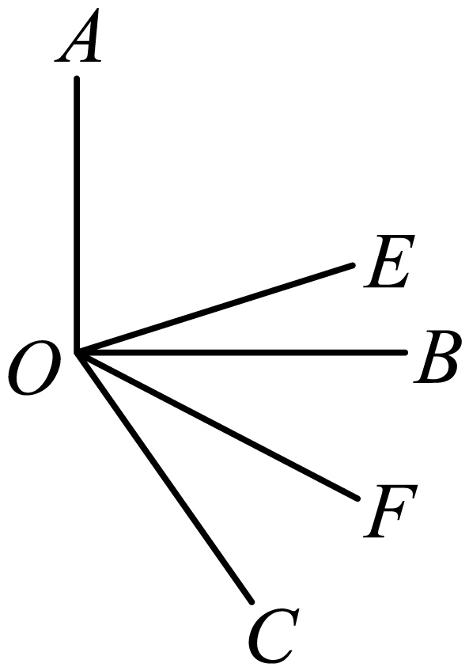
(1)若∠AOB是直角，求∠EOF的度数；
(2)若∠AOB+∠EOF=156°，则∠EOF是多少度？
【答案】(1)∠EOF=45°
(2)∠EOF=52°
【分析】本题考查了角的计算，角平分线的定义；
（1）根据角平分线的定义可得∠EOC=12∠AOC=12∠AOB+∠BOC，∠COF=12∠BOC，再根据∠EOF=∠EOC−∠COF=12∠AOB进行计算即可得解；
（2）根据（1）的结论得到∠AOB=2∠EOF，然后代入进行计算即可得解．
【详解】（1）解：∵OE平分∠AOC，
∴∠EOC=12∠AOC=12∠AOB+∠BOC，
∵OF平分∠BOC，
∴∠COF=12∠BOC，
∴∠EOF=∠EOC−∠COF=12∠AOB+∠BOC−12∠BOC=12∠AOB，
∵∠AOB是直角，
∴∠EOF=12×90°=45°；
（2）解：根据（1）的结论∠EOF=12∠AOB，
∴∠AOB=2∠EOF，
∴∠AOB+∠EOF=2∠EOF+∠EOF=156°，
解得∠EOF=52°．
19．（8分）（24-25七年级上·河南漯河·期末）如图，点C在线段AB上，AC=10，BC=13AB．
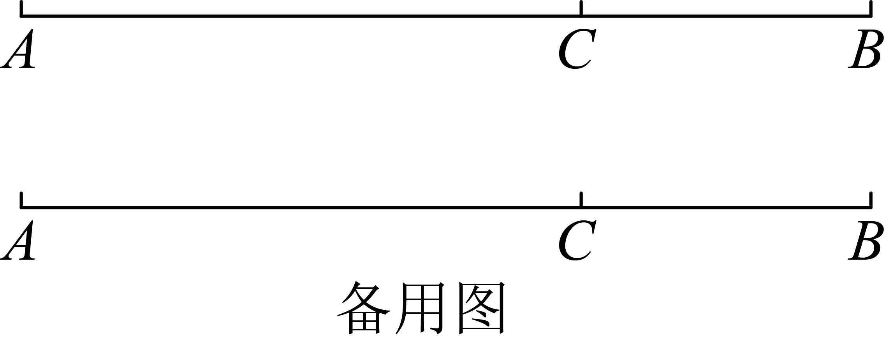
(1)求AB的长．
(2)若DE=8，线段DE在线段AB上移动，且点D在点E的左侧．
①当D为AC的中点时，求BE的长．
②点F（不与点A，B，C重合）在线段AB上，且AF=2AD，CF=2，求出AE的长．
【答案】(1)15
(2)①2；②12或14
【分析】此题考查了线段的和差和中点的相关计算，分类讨论是解题的关键．
（1）根据BC=13AB得到AC=23AB，即可求出AB的长；
（2）①由中点的定义得到DC=12AC=5，则CE=DE−DC=8−5=3．由BC=5得到BE=BC−CE=5−3=2；②分两种情况讨论：点F在点C的左侧和点F在点C的右侧，分别画出图形，进行解答即可．
【详解】（1）解：∵BC=13AB，
∴AC=23AB，
∵AC=10，
∴AB=32AC=15．
（2）①∵D为AC的中点，
∴DC=12AC=5，
∴CE=DE−DC=8−5=3．
∵AB=15，AC=10，
∴BC=5，
∴BE=BC−CE=5−3=2．
②分两种情况讨论：
（ⅰ）如图1，当点F在点C的左侧时．
∵AC=10，CF=2，
∴AF=AC−CF=10−2=8.
∵AF=2AD，DE=8，
∴AD=12AF=4，
∴AE=AD+DE=4+8=12；
（ⅱ）如图2，当点F在点C的右侧时．
∵AC=10，CF=2，
∴AF=AC+CF=10+2=12．
∵AF=2AD，DE=8，
∴AD=12AF=6，
∴AE=AD+DE=6+8=14．
综上所述，AE的长为12或14．
20．（8分）已知，在∠AOB内部作射线OC，OD平分∠BOC，∠AOD+∠COD=120°．
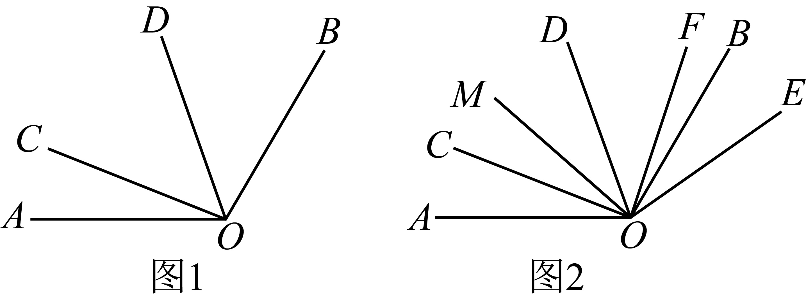
(1)如图1，求∠AOB的度数；
(2)如图2，在∠COD内部作射线OM，使∠BOM=4∠COM，在∠AOB外部作射线OE，使得∠BOE=1110∠AOC，作OF平分∠DOE，当∠AOC=20°时，求∠DOM、∠DOF的度数．
【答案】(1)∠AOB=120°
(2)∠DOM=30°，∠DOF=36°
【分析】本题考查了角的计算与角平分线的性质，解题的关键是利用角平分线的性质以及角之间的和差关系进行分析计算．
（1）利用角平分线的性质，将角进行转化，结合已知条件求出∠AOB的度数；
（2）先根据已知条件求出∠BOC的度数，再利用角之间的和差关系以及角平分线的性质求出∠DOM和∠DOF的度数．
【详解】（1）解：∵OD平分∠BOC，
∴ ∠BOD=∠COD，
∵ ∠AOD+∠COD=120°，
∴ ∠AOD+∠BOD=120°，
即∠AOB=120°；
（2）解：∵ ∠AOB=120°，∠AOC=20°，
∴ ∠BOC=∠AOB−∠AOC=120°−20°=100°．
∵OD平分∠BOC，
∴ ∠COD=∠BOD=12∠BOC=50°，
∵ ∠BOM=4∠COM，
∴ ∠COM=15∠BOC=15×100°=20°，
∴ ∠DOM=∠COD−∠COM=50°−20°=30°．
∵ ∠AOC=20°,∠BOE=1110∠AOC，
则∠BOE=22°，
∵ ∠DOE=∠BOD+∠BOE，OF平分∠DOE，
∴ ∠DOF=12∠DOE=12×50°+22°=36°．
21．（10分）（24-25七年级上·甘肃兰州·期末）如图，在射线OM上有A，B，C三点，满足OA=4cm，AB=12cm，BC=2cm．点P从点O出发，沿OM方向以1cm/s的速度运动；点Q从点C出发在线段CO上向点O匀速运动（点Q运动到点O时停止运动），两点同时出发．
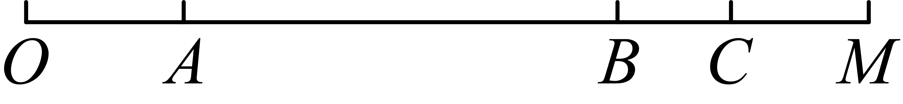
(1)当PA=2PB（P在线段AB上）时，点Q运动到的位置恰好是线段AB的中点，则点Q的运动速度为 cm/s．（直接写出答案即可）
(2)若点Q的运动速度为3cm/s，经过多长时间P、Q两点相距10cm？
(3)当点P运动到线段AB上时，分别取OP和AB的中点E、F，则OB−APEF= ．（直接写出答案即可）
【答案】(1)23
(2)2s或10s
(3)2
【分析】本题主要考查了线段的和差及中点，路程问题，列一元一次方程解决几何问题，动点问题，解题的关键是熟练掌握数形结合的数学思想．
（1）根据中点的性质和线段的倍数关系求出线段的长度，然后根据速度公式进行求解即可；
（2）根据题意，分两种情况进行讨论，即当点Q运动时和停止时，进行列方程求解即可；
（3）根据动点分三种情况进行讨论，根据线段中点得出相等的线段，令OE=PE=a，则OP=2a，利用线段的和差表示出相关线段，然后代入求值即可．
【详解】（1）解：如图所示，
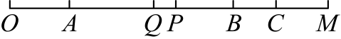
∵AB=12cm，PA=2PB，
∴PA=23AB=8cm,PB=13AB=4cm，
∵点Q运动到的位置恰好是线段AB的中点，
∴QB=12AB=6cm，
∴OP=OA+AP=4+8=12cm，QC=QB+BC=6+2=8cm，
∴点P运动的时间为12÷1=12s，
∴点Q的速度为812=23cm/s，
故答案为：23；
（2）解：当点Q没有运动到了点O时，假设点Q运动的时间为xs，OC=OA+AB+BC=4+12+2=18cm，18÷3=6s，
∴x≤6，
根据题意得，
①18−x+3x=10
解得x=2，
2<6，符合题意，
所以，经过2sP、Q两点相距10cm；
②x+3x−18=10
解得x=7，
∵7>6，
该种情况不符合题意，舍去；
当点Q运动到了点O，停止运动时，此时，PQ=OP=10cm，根据题意得，
点P运动的时间为10÷1=10s，
综上，经过2s或10sP、Q两点相距10cm；
（3）解：①如图所示，当点P位于点F左侧，点E位于点A左侧时，
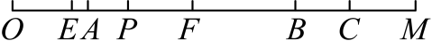
∵OP和AB的中点为E、F，
∴OP=2OE=2PE,AF=BF=12AB=6cm，
令OE=PE=a，则OP=2a，
∴OF=OA+AF=4+6=10cm，
EF=OF−OE=10−a，
OB=OA+AB=4+12=16cm，
AP=OP−OA=2a−4，
∴OB−APEF=16−2a−410−a=20−2a10−a=2；
②如图所示，当点P位于点F左侧，点E位于点A右侧时，
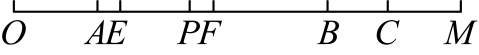
∵OP和AB的中点为E、F，
∴OP=2OE=2PE,AF=BF=12AB=6cm，
令OE=PE=a，则OP=2a，
∴OF=OA+AF=4+6=10cm，
EF=OF−OE=10−a，
OB=OA+AB=4+12=16cm，
AP=OP−OA=2a−4，
∴OB−APEF=16−2a−410−a=20−2a10−a=2；
③如图所示，当点P位于点F右侧时，
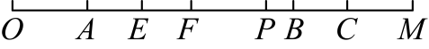
∵OP和AB的中点为E、F，
∴OP=2OE=2PE,AF=BF=12AB=6cm，
令OE=PE=a，则OP=2a，
∴OF=OA+AF=4+6=10cm，
EF=OF−OE=10−a，
OB=OA+AB=4+12=16cm，
AP=OP−OA=2a−4，
∴OB−APEF=16−2a−410−a=20−2a10−a=2；
综上，OB−APEF=2．
22．（10分）（24-25七年级上·浙江杭州·期末）如图，已知线段OA,OB,OC,OD,OE在同一平面内，且∠AOE=110°，∠AOB=20°．
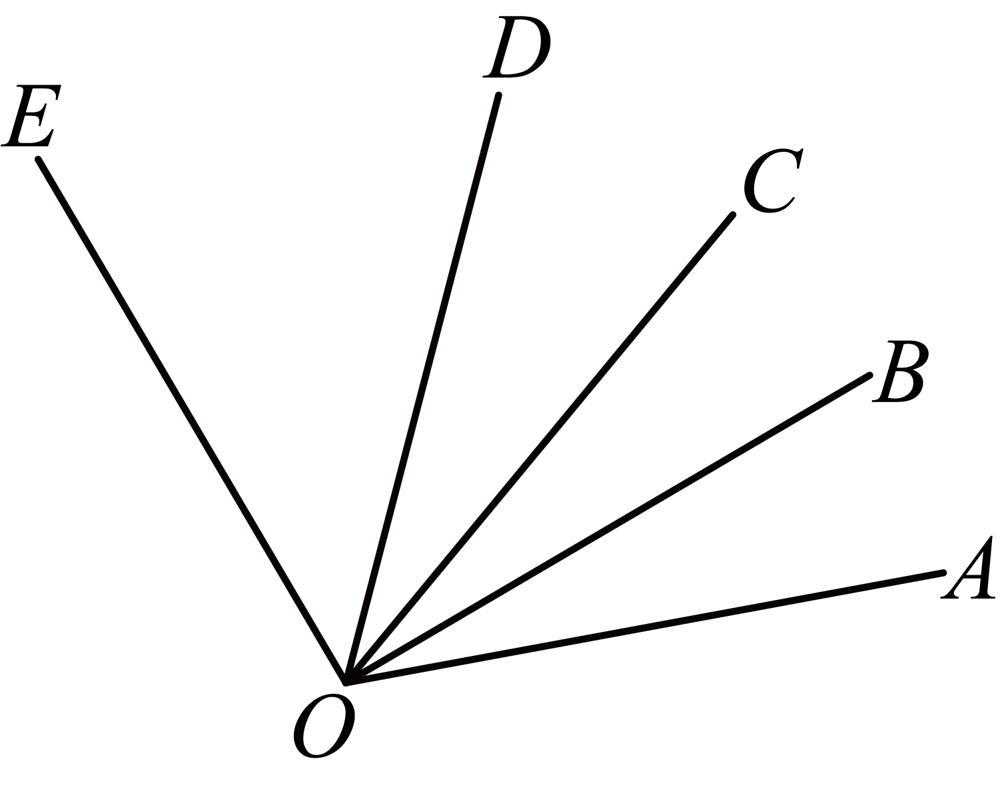
(1)若OB平分∠AOC，求∠COE的度数；
(2)在（1）条件下，若OD也平分∠BOE，求∠COD的度数；
(3)若线段OA与OB分别为同一钟表上某一时刻的时针与分针，则经过多少时间，OA与OB第一次垂直．
【答案】(1)70°
(2)25°
(3)20min
【分析】（1）根据角的平分线的特点，可以得知所分两角相等，等于原角的一半，根据角与角之间的数量关系即可得出结论；
（2）根据角的平分线的特点，可以得知所分两角相等，等于原角的一半，根据角与角之间的数量关系即可得出结论；
（3）根据题意，得时针每分钟转过360°12×60=0.5°，分针每分钟转过360°60=6°，设转动xmin，两个指针第一次垂直，根据题意，得6x−20−0.5x=90，解方程即可．
本题考查了角的平分线的定义，角的和差计算，解方程，熟练掌握角的平分线，解方程是解题的关键．
【详解】（1）解：∵∠AOE=110°，∠AOB=20°，
∴∠BOE=∠AOE−∠AOB=110°−20°=90°，
∵OB平分∠AOC，
∴∠COB=∠BOA=20°，
∴∠COE=∠BOE−∠COB=70°．
（2）解：∵∠AOE=110°，∠AOB=20°，
∴∠BOE=∠AOE−∠AOB=110°−20°=90°，
∵OD平分∠BOE，
∴∠DOE=∠DOB=45°，
∵OB平分∠AOC，
∴∠COB=∠BOA=20°，
∴∠COD=∠BOD−∠COB=25°．
（3）解：根据题意，得时针每分钟转过360°12×60=0.5°，分针每分钟转过360°60=6°，
设转动xmin，两个指针第一次垂直，根据题意，得6x−20−0.5x=90，
解得x=20．
故经过20min，OA与OB第一次垂直．
23．（12分）（24-25七年级上·福建福州·期末）【背景知识】数轴是初中数学的一个重要工具，利用数轴可以将数与形完美地结合．研究数轴我们发现了许多重要的规律：若数轴上点A、点B表示的数分别为a、b，则A，B两点之间的距离AB=a−b，线段AB的中点表示的数为a+b2．
【问题情境】如图，在数轴上，点A在原点O的左侧，点B在原点O的右侧，点A所对应的数a满足a+4=0，且AB=12，点D从A出发以1个单位长度/秒的速度沿数轴向右运动，点E从B出发以2个单位长度/秒的速度沿数轴向左运动，当D、E两点相遇时停止运动．
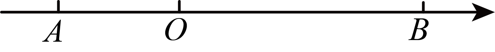
【综合运用】
(1)直接写出点A表示的数为 ，点B表示的数为 ；
(2)点P为线段DE的中点，D、E两点同时开始运动，设运动时间为t秒，线段OP的长为d个单位长度，求用含t的整式表示d；
(3)在（2）条件下，点C在线段AB上，且AC=2BC，当t为何值时，满足2OP+3CE=CD．
【答案】(1)−4，8
(2)d=4−t2(0≤t≤4)
(3)当t=43或t=83时，2OP+3CE=CD
【分析】（1）根据“a+4=0，AB=12”再结合点A、点B在数轴上的位置，即可求出点A、点B表示的数；
（2）根据点D、点E运动方式表示出点D、点E坐标，再根据中点坐标公式表示出点P坐标，最后根据两点之间距离公式表示出线段OP的长度d，还可根据“当D、E两点相遇时停止运动”求出时间t的范围；
（3）先根据点C位置求出点C坐标，再根据两点之间距离公式表示出CD长度，在讨论CE长度时需要分类讨论点C与点E的位置关系，最后把三条线段长度代入2OP+3CE=CD即可列出方程，解出t．
【详解】（1）解：∵a+4=0，
∴a=−4
∵点B在点A的右侧，且AB=12
∴b=−4+12=8
故答案为：−4，8
（2）∵点D从A出发以1个单位长度/秒的速度沿数轴向右运动，
∴点D坐标为：−4+t
∵点E从B出发以2个单位长度/秒的速度沿数轴向左运动，
∴点E坐标为：8−2t
∵点P为线段DE的中点，
∴点P坐标为：−4+t+8−2t2=4−t2
∵当D、E两点相遇时停止运动，即当−4+t=8−2t，t=4时停止运动
∴线段OP的长度d=4−t2(0≤t≤4)
（3）∵点C在线段AB上，且AC=2BC，AC+BC=AB=12
∴3BC=12，BC=4，点C坐标为：8−4=4
由（2）可知OP=4−t2，点D坐标为：−4+t，且在点C左边，
∴CD=4−(−4+t)=8−t
当点E在点C右边时，即8−2t＞4，t<2
CE=4−(8−2t)=4−2t
∵2OP+3CE=CD
∴2×4−t2+3×(4−2t)=8−t
解得t=43
当点E不在点C右边时，即8−2t≤4，t≥2
CE=4−(8−2t)=2t−4
∵2OP+3CE=CD
∴2×4−t2+3×(2t−4)=8−t
解得t=83
综上所述，当t=43或t=83时，2OP+3CE=CD．
【点睛】本题考查了一元一次方程的应用、数轴、两点之间距离公式和两点之间中点坐标公式．解题的关键是掌握点的移动与点所表示的数之间的关系，根据题目给出的条件，找出合适的等量关系列出方程，再求解，在表示两点之间距离时需要对两个点的位置关系进行分类讨论．
24．（12分）（24-25七年级上·天津·期末）已知∠AOB=90°，∠COD=60°，按如图1所示摆放，将OA、OC边重合在直线MN上，OB、OD边在直线MN的两侧：
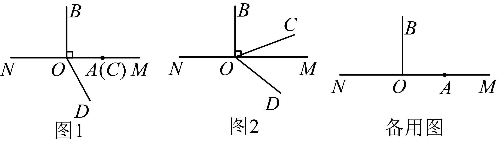
(1)如图1，作射线OE平分∠AOB，射线OF平分∠COD，补全图形，并求出∠EOF的度数．
(2)保持∠AOB不动，将∠COD绕点O旋转至如图2所示的位置，则
①∠AOC+∠BOD=___________°（度）（直接写答案）
②∠BOC−∠AOD=___________°（度）（直接写答案）
(3)若∠COD按每分钟5°的速度绕点O逆时针方向旋转，∠AOB按每分钟2°的速度也绕点O逆时针方向旋转，OC旋转到射线ON上时都停止运动，设旋转t分钟，计算∠MOC−∠AOD．请画出图形并直接写出对应的结果（用含t的代数式表示）．
【答案】(1)补图见解析，∠EOF=75°
(2)150；30
(3)∠MOC−∠AOD=8t°−60°或∠MOC−∠AOD=2t°+60°
【分析】（1）补全图形，根据角平分线定义与角的和计算；
（2）①将∠AOC+∠BOD拆分、转化为∠AOB+∠COD即可得；②依据∠BOC+∠AOC=∠AOB、∠AOD+∠AOC=∠COD，将原式拆分、转化为∠AOB−∠COD计算可得；
（3）设运动时间为t分钟，∠MOC=5t°，∠MOA=2t°，∠COD=60°，分0≤t≤12、12<t≤20和20<t≤36表示出∠AOD即可得出答案；
【详解】（1）解：如图，作出∠AOB的平分线OE，∠COD的平分线OF，
∵∠AOB=90°，∠COD=60°，
且OE平分∠AOB，OF平分∠COD，
∴∠AOE=12∠AOB=45°，∠COF=12∠COD=30°，
∵OA、OC边重合在直线MN上，
∴∠EOF=∠AOE+∠COF=75°；

（2）解：∠AOC+∠BOD
=∠AOC+∠BOC+∠COD
=∠AOB+∠COD
=150°；
∠BOC−∠AOD
=∠BOC+∠AOC−∠AOD+∠AOC
=∠AOB−∠COD
=30°．
故答案为：150；30．
（3）解：∵∠COD按每分钟5°的速度绕点O逆时针方向旋转，
∠AOB按每分钟2°的速度也绕点O逆时针方向旋转，
旋转t分钟，
∴∠MOC=5t°，∠MOA=2t°，
∵∠COD=60°，
∴当0≤t≤12时，
∠MOD=∠COD−∠COM=60°−5t°，
∴∠AOD=∠AOM+∠DOM=60°−3t°，
∴∠MOC−∠AOD=8t°−60°；
当12<t≤20时，
∠DOM=∠COM−∠COD=5t°−60°，
∴∠AOD=∠AOM−∠DOM=60°−3t°，
∴∠MOC−∠AOD=8t°−60°；
当20<t≤36时，
∠DOM=∠COM−∠COD=5t°−60°，
∴∠AOD=∠DOM−∠AOM=3t°−60°，
∴∠MOC−∠AOD=2t°+60°；
综上，∠MOC−∠AOD=8t°−60°或∠MOC−∠AOD=2t°+60°．